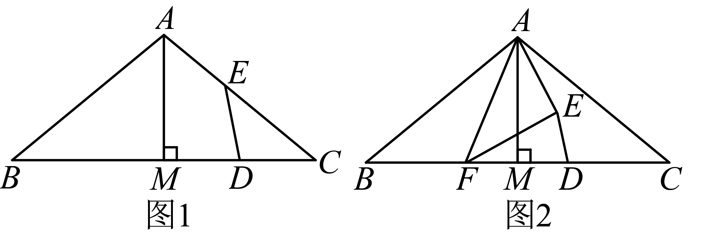

2023年北京市中考数学真题 · 数学解答题 第27题27. 在中、，于点M，D是线段上的动点（不与点M，C重合），将线段绕点D顺时针旋转得到线段． （1）如图1，当点E在线段上时，求证：D是的中点；（2）如图2，若在线段上存在点F（不与点B，M重合）满足，连接，，直接写出的大小，并证明．
 中、
中、 ，
， 于点M，D是线段
于点M，D是线段 上的动点（不与点M，C重合），将线段
上的动点（不与点M，C重合），将线段 绕点D顺时针旋转
绕点D顺时针旋转 得到线段
得到线段 ．
． 上时，求证：D是的中点；
上时，求证：D是的中点； 上存在点F（不与点B，M重合）满足
上存在点F（不与点B，M重合）满足 ，连接
，连接 ，
， ，直接写出
，直接写出 的大小，并证明．
的大小，并证明．